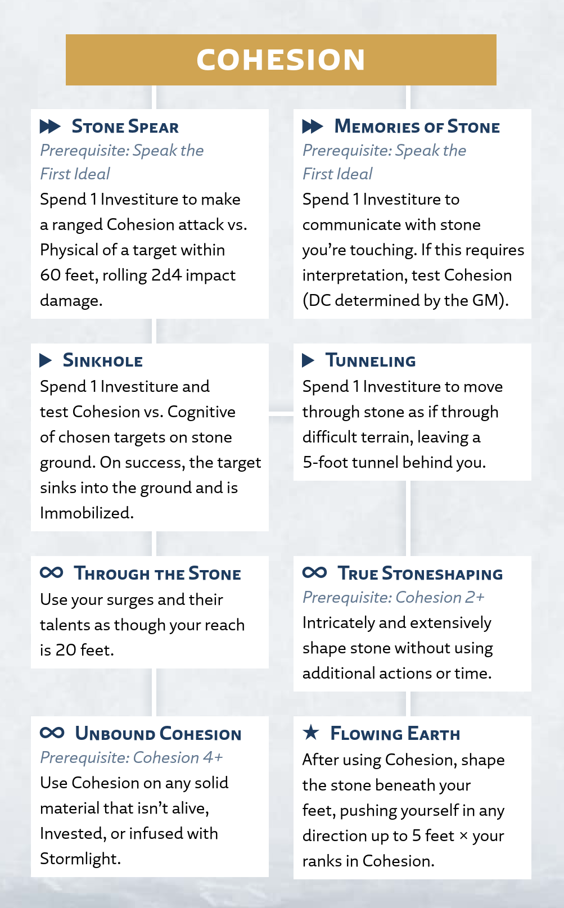

Cohesion
Willpower
The surge of Cohesion allows you to alter objects down to their very axi—the particles that make up all matter. Often known as Stoneshaping, Cohesion allows even its most inexperienced wielders to mold stone as if it were soft clay.
Cohesion Surge
Radiant Orders: Stoneward, Willshaper
Activation: ▶
Infuse 1 Investiture or more into an unattended object or portion of a surface within your reach that is made of stone; to do so, you must have a hand free and touch the target. This infusion uses 1 Investiture each round, and for the duration, the stone becomes moldable and soft like clay. When you activate this surge, you can immediately form the stone into a rough shape as part of that action, but any elaborate molding requires more time (see "Shaping Stone").
This object or portion of the surface can't exceed the surge size for your ranks in Cohesion (see the Surge Scaling table at the beginning of this chapter).
You can't use this surge on characters, Invested objects (like Shardplate), or objects that have been infused with Stormlight (like infused spheres or objects affected by surges).
Using Cohesion
In addition to the basic surge rules above, this section provides more guidance on using or interacting with this surge in your game.
Shaping Stone
You can touch Cohesion-infused stone and mold it into any shape you desire; when that infusion ends, the stone resolidifies in its new shape, strong as before. You can briefly shape the stone when you activate the surge, but more elaborate reshaping requires additional time. In combat, this usually requires an additional action to Interact (for moderate reshaping) or Use a Skill (if your creation is intricate enough to require a Cohesion skill test; the GM sets the DC based on how elaborate of an object you're creating). At the GM's discretion, some shaping tasks might take significantly more time, potentially requiring labor outside of combat.
Cohesion on Others
While it's simple to melt and reshape unattended stone, trying to use it against opponents is more difficult. To infuse an object held by an unwilling character or to infuse a surface that's supporting most of their weight (such as the ground they're standing on), you must succeed on a Cohesion test against the target's Physical defense. On a failure, you don't infuse that object and you don't spend Investiture on the attempt.
You can use this surge in countless creative ways, and it's up to you and your GM to decide how to resolve each situation. For example, you might infuse the ground under your opponent's feet, causing them to sink them into the earth and become Slowed by the quagmire. Or you might soften a portion of a stone wall, collapsing it atop them. You might even smear soft stone over a weapon they're holding, giving it the Heavy trait with a value equal to your ranks in Cohesion.
Escaping Solid Stone
When a Cohesion infusion runs out, the stone returns to its previously rigid state. When this happens, any character or object at least partially within it becomes Immobilized; if enough of their body is encased, they might also become Restrained. To free such a character or object, the trapped character or another character within reach must Use a Skill, making an Athletics test opposed by your Cohesion. If they succeed, they slip out. Otherwise, they must be dug out, which can take 10 minutes or much longer, depending on the situation.
Cohesion Talent Tree
Cohesion Talents
The following talents, presented here in alphabetical order, appear in the Cohesion talent tree for the Stoneward and Willshaper paths.
Flowing Earth
Prerequisite: True Stoneshaping talent
Activation: ★
Shaping stone with Cohesion has become so natural that you can mold the ground beneath your feet as you actively sculpt other stone.
After you use Cohesion or spend at least ▶ on one of its talents, you can shape the stone beneath your feet without spending additional Investiture to do so. The stone pushes you up to 5 feet × your ranks in Cohesion, and you can choose to be pushed in any direction, such as rising upward on a pillar. This movement doesn't trigger Reactive Strikes.
Memories of Stone
Prerequisite: Speak the First Ideal
Activation: ▶▶
Your deepening knowledge of the earth allows you to commune with stone itself, gaining visions of things the stone has seen.
Spend 1 Investiture to communicate for 1 round with stone you're touching. The earth's knowledge reaches far, including the area's history and memories of nearby events, but it communicates in sculpted images and faint whispers that might be cryptic or incomplete. To interpret these communications, the GM might require you to succeed on a Cohesion test (DC determined by the GM). To communicate with the stone for more than 1 round, you must use this talent multiple times.
Sinkhole
Prerequisite: Stone Spear talent
Activation: ▶
You cause the ground to soften so quickly that it can catch anyone standing in it by surprise.
Spend 1 Investiture and choose an area of stone ground of a size you can affect with your ranks in Cohesion. Then choose one or more characters who are touching the ground in that area. Make one Cohesion test and compare the result to the Cognitive defense of each chosen character. If you succeed against a target, they sink into the ground and are Immobilized as you resolidify the rock. (See "Using Cohesion" for rules on escaping.)
Stone Spear
Prerequisite: Speak the First Ideal
Activation: ▶▶
You cause the surface of the stone to launch forward in tight pillars, solidifying mid-flight before slamming into your target.
Spend 1 Investiture to make a ranged Cohesion attack against the Physical defense of a target within 60 feet of you, rolling 2d4 impact damage. On a hit, you can also spend ✧ to knock the target Prone.
The size of this attack's damage dice increases with your ranks in Cohesion; at 2 ranks, roll 2d6 (instead of 2d4), and so on.
Through the Stone
Prerequisite: Sinkhole talent
Activation: ∞
When you touch stone, you can sense and use your Cohesion through it from a much greater distance.
You can use your surges and their talents as though your reach is 20 feet, as long as there is a stone surface between you and your target that you can touch.
True Stoneshaping
Prerequisite: Cohesion 2+; Tunneling talent
Activation: ∞
You no longer simply soften stone—you assert your will on it, molding it into complex shapes with a mere command.
When you use Cohesion to shape an object or surface, you can automatically reshape it to your will without using additional actions or time. For example, you can instantly raise or lower elevation, form walls or pillars, create or remove difficult terrain, or create intricate shapes or images.
Tunneling
Prerequisite: Sinkhole talent
Activation: ▶
You infuse yourself with Cohesion to shift stone from your path as you move.
Spend 1 Investiture to infuse yourself with Cohesion. For the duration, you can move through stone surfaces and objects as if moving through difficult terrain. You leave a 5-foot-radius tunnel in your wake through which others can follow. At the start of each of your turns, you can spend 1 Investiture as ▷ to maintain this infusion.
If you create tunnels near the surface, an observant character might detect ripples from the diverted material, potentially sensing your presence.
Unbound Cohesion
Prerequisite: Cohesion 4+; Through the Stone talent
Activation: ∞
Your Stoneshaping transcends a singular medium, allowing you to soften and shape nearly any material.
You can use Cohesion and its talents not only on stone, but on any solid material that isn't alive, Invested, or infused with Stormlight.